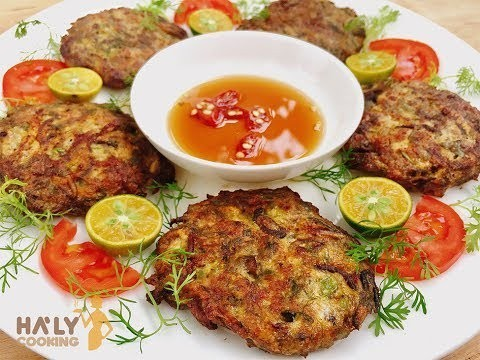
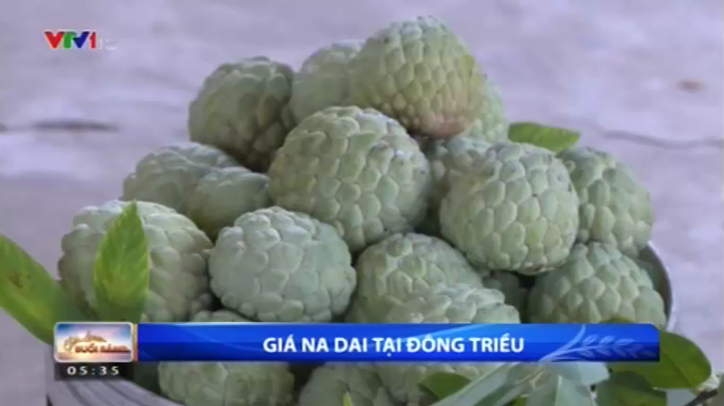

Không chỉ là vùng đất địa linh nhân kiệt, Đông Triều còn sở hữu những đặc sản địa phương nổi tiếng gần xa.
1. Rươi Đông Triều
“Đi đến Quảng Ninh – Nhớ rươi Đông Triều” đã trở thành câu châm ngôn của người dân vùng mỏ. Rươi Đông Triều nổi tiếng vùng Bắc
Bộ, sống sâu trong lòng đất và trồi lên trên bề mặt vào cuối tháng chín đầu tháng mười âm lịch âm lịch. Rươi phân bổ rải rác ở sông
Đạm Thuỷ, sông Đá Bạc, sông Cầu Cau, nhiều nhất là ở sông Cầm, chúng thường có kích thước lớn, tươi, ngon, dày mình và có vị
bùi, béo, ngậy khi ăn. Từ rươi, có thể chế biến thành nhiều các món đặc sản khác nhau như: chả rươi, rươi kho, rươi nấu chua, nước
mắm rươi...

2. Gạo nếp cái hoa vàng Đông Triều
Nếp cái hoa vàng là giống lúa cổ truyền, được người dân Đông Triều sản xuất từ nhiều năm nay. Nó là sản phẩm OCOP đặc trưng của
Đông Triều, có diện tích khoảng 500 ha, sản lượng 2.500 tấn/năm. Gạo có chất lượng thơm ngon do được cấy trên những cánh đồng
trũng, đất chua phèn và được tưới bằng nguồn nước phù sa
3. Na dai Đông Triều
Đông Triều có khoảng 1.000 ha na dai, tập trung chủ yếu ở 3 xã: Việt Dân, An Sinh, Tân Việt với sản lượng khoảng 6.000 tấn/năm. Sản
phẩm nổi tiếng bởi mùi vị đặc trưng (thơm, ngọt), quả to, vỏ mỏng và bóng sáng... Đặc biệt, na dai Đông Triều chín sớm hơn các vùng
khác từ 15-20 ngày.

4. Vải Đông Triều
Đông Triều từng là “vùng đất vải” của tỉnh Quảng Ninh. Đến nay, toàn thị xã còn 948 ha vải chín sớm và vải thiều, trồng tập trung ở
các xã: Tràng Lương, Bình Khê, An Sinh, Hồng Thái Đông.
Từ năm 2015, thị xã đã áp dụng quy trình sản xuất vải thiều theo hướng VietGAP và GlobalGAP, đảm bảo tỷ lệ ra hoa, đậu quả, chất
lượng, mẫu mã đáp ứng các tiêu chuẩn thị trường trong nước và xuất khẩu. Vải Đông Triều đã được cấp mã vùng trồng đang triển
khai lộ trình xuất khẩu sang Trung Quốc, Úc và Nhật Bản.
5. Cam đường canh Đông Triều
Giống cam đường canh Đông Triều có quả tròn, không to, vị ngọt sắc, thơm, mát đậm... Tại Đông Triều, cam đường canh được trồng
các xã: Tràng Lương, Bình Khê, An Sinh, Hồng Thái Đông.
nhiều tại xã Việt Dân, An Sinh, Bình Khê và Thủy An. Sản phẩm đã được chứng nhận đạt tiêu chuẩn VietGAP và bán trên thị trường.
Do phù hợp với thổ nhưỡng và khí hậu nên sản phẩm giữ được vị đặc trưng của cam đường canh
.png)
Nguồn:Hoa cây cảnh Đông Triều
.jpg)